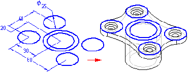
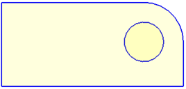
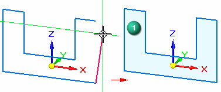
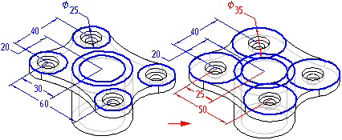
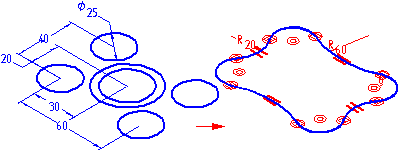

Using ordered sketches to create ordered features
Drawing ordered sketches allows you to establish the basic functional requirements of a part before you construct any features. You can draw a sketch on any reference plane using the Sketch command or a drawing command in the Sketch group in the Part and Sheet Metal environments. Then you can use these sketches to create sketch-based features.

Sketching a part before modeling it gives you several advantages:
-
Draw multiple sketches on one reference plane.
-
Define relationships, such as tangency or equality, between sketches on different reference planes.
-
Sketch the design first, and create the subsequent features later.
Drawing ordered sketches
When you choose the Sketch command or a drawing command such as the Line command, and select a reference plane or planar face, a profile view is displayed for you to draw 2D geometry.
The sketch elements you draw are assigned to the active layer. For example, when working with a complex sketch that will be used to construct a lofted feature, you may want to arrange the elements on multiple layers.
Use the Closed Sketch Indicator command in the sketch environment to indicate that a sketch is geometrically closed. When you select the command, the inside area of the sketch is shaded.

Nested closed sketches are displayed with a different opacity.

When you deselect the command, the inside of the closed sketch is not shaded.

When exiting the sketch environment during feature creation, sketches may appear to be painted or indicated to be closed, but are reported as open during profile validation. Most likely, this is because the sketch contains elements that are geometrically closed, but do not have connect relationships applied to the endpoints. To correct this, apply connect relationships to the endpoints in the sketch.
You can use the Closed Sketch option on the Colors tab on the Solid Edge Options dialog box in the sketch environment to set the color and opacity for closed sketches.
You can add dimensions and relationships to control the positions and sizes of the
profiles. You can also define functional relationships using the Variables command. You can use the Save and Save All commands to save the sketches while you create them. When you have finished drawing,
close the profile view using the Close Sketch command on the command menu or click the Close Sketch button  in the window.
in the window.
Sketch regions in ordered modeling
In a part or sheet metal document, when you draw 2D sketch elements that form a closed area, the closed area is automatically displayed as a sketch region (1). When working in a shaded view, the closed region is also displayed as shaded.

As with synchronous modeling, you can use the Activate Regions command to enable or disable the sketch regions. You can also use the option Activate Regions within sketches on the General tab on the Solid Edge Options dialog box in the part environment to control the creation of regions in new sketches.
Sketches and PathFinder
Sketches are represented in the PathFinder tab just like features are. You can display or hide them from the feature tree with the PathFinder shortcut command, Display→Sketches. You can use PathFinder to reorder or rename a sketch just as you would any feature.
Displaying sketches
You can control the display of all the sketches in a document or individual sketches. To display or hide all sketches, use the Show All: Sketches and Hide All: Sketches commands. To display or hide individual sketches, select a sketch in the application window or PathFinder, then use the Show and Hide commands on the short cut menu.
You can also control the display of elements in a sketch by assigning the sketch elements to a logical set of layers, and then display or hide the layers to control the display of the sketch elements.
When a sketch is active, it is displayed using the Profile color. When a sketch is not active, it is displayed using the construction color. You can set the colors you want using the Options command.
Using sketches to construct features
You can use ordered sketches to construct features in the following ways:
-
Directly, by clicking the Select From Sketch button on the feature command bar.
-
Indirectly, by clicking the Draw button on the feature command bar and then associatively copying sketch geometry onto the active sketch plane using the Project to Sketch command.
Using sketches directly
You can use sketches directly if no modifications to the sketch are required.
When constructing an ordered feature, click the Select From Sketch button on the feature command bar. You can then select one or more sketches. When you click the Accept button on the command bar, the profiles you selected are checked to make sure they are valid for the type of feature you are constructing. For example, if you are constructing an ordered base feature, the profile you select must be closed. If you select an open profile or more than one profile, an error message is displayed. You can then select the Deselect (x) button on the command bar to clear the selected profiles.
Ordered features constructed using ordered sketches are associative to the sketch and update when you edit the sketch.

Using sketches indirectly
If the sketch requires modification before using it to construct a feature, you must first copy it to the active sketch plane.
When you click the Draw Profile button on the feature command bar, and define the sketch plane you want, a profile view is displayed. You can then use the Project to Sketch command to copy elements from sketch profiles to the active profile plane.
After you have copied sketch elements, you can use the drawing commands to modify them. For example, you may need to add elements to the profile not contained in the sketch. You can also add dimensions and relationships between the elements on the active profile plane and the sketch.

The sketched elements you copy are associative to the sketch and will update if the sketch dimensions are edited.
Sketches and revolved features
Sketches that are used for constructing revolved ordered features must have an axis defined in the sketch. If you select a sketch profile that does not have an axis, an error message is displayed. You will have to cancel the revolved feature you are constructing, then open the sketch to define the axis.
Sketches and the swept and loft commands
Drawing sketches can be especially useful when constructing swept and lofted features. Because the Sketch command allows you to define relationships between sketches on separate planes, you can more easily define the relationships you need to control these features properly. Additionally, the ability to exit a sketch window without creating a feature can be especially useful when drawing the profiles for swept and lofted features.
How do I
Project part edges onto a sketchChange peer edge locatability
Change silhouette edge locatability
Delete a sketch or sketch elements
Rename a sketch
Copy or move a sketch to another reference plane
Copy a sketch to another document
Learn more
Drawing synchronous sketches of partsUsing sketches in assemblies
Editing sketch elements